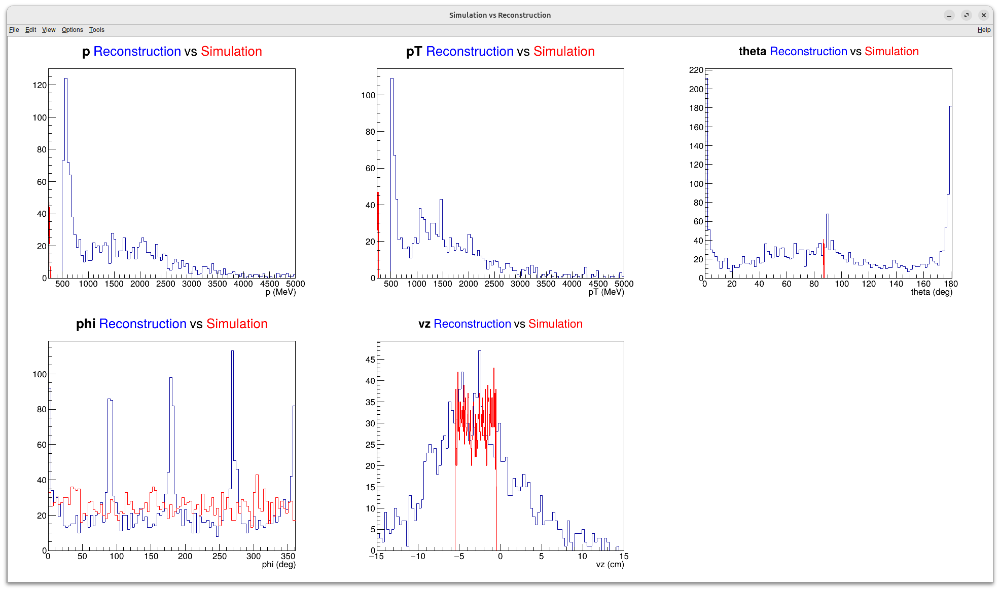

Current state of the reconstruction on simulated data
Lognumber 46.
Submitted on Mon, 25 Aug 2025 - 13:25:44 CEST
Marker: simulation, reconstruction
Send to:
I run the reconstruction on simulated data. It is obviously bad.
1) In p or pT distribution, it is strange to have nothind below 500 MeV. it is like we have a hidden cut.
2) In theta, it is strange that we reconstruct a lot of thing at 0 and 180 degree. If the track was colinear to the beam axis, we could not have any hits.
3) There are peaks in the phi distribution: we expect it to be equiprobable.
########
To do
########
- Verify the position of the hits
- Verify that the distances are the same in simulation and in reconstrution
PS: I don't use the same binning for the simulation and for the reconstruction, so there is scale effect on these plots.
Attachments (1)
1.
